Spatial Ecology’s 2023 course
Geocomputation and Machine Learning for environmental applications
Spatial Ecology course trainers
Tushar Sethi (administrator - course organizer)
Giuseppe Amatulli (teacher - course organizer)
Antonio Fonseca (teacher)
Francesco Lovergine (teacher)
Pieter Kempeneers (teacher)
Longzhu Shen (math/stat advisor)
Student affiliation and their origin
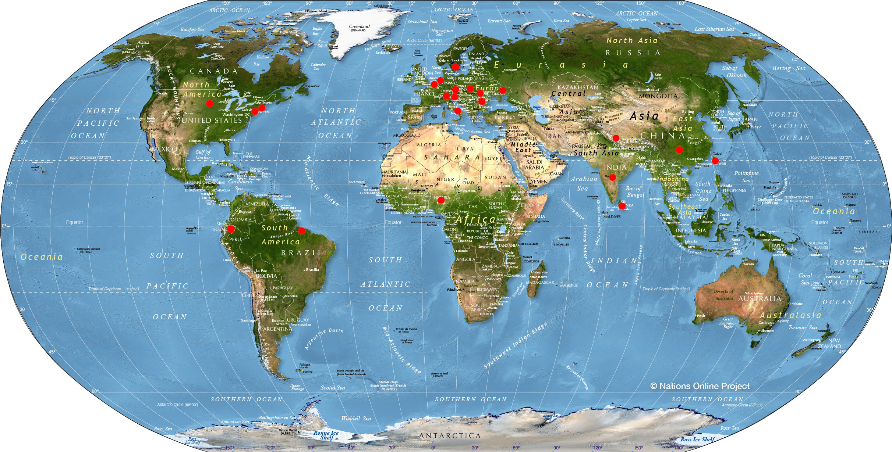
Student roster
(1_1) Bibek Raj Shrestha (Nepal)
Global Institute for Interdisciplinary Studies (GIIS) - Nepal
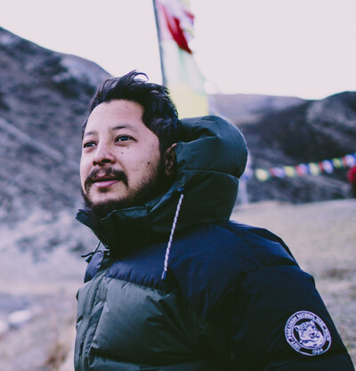
(2_2) Amanda Cutler (USA)
Brown University, USA
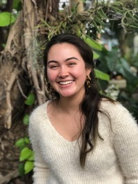
(3_3) Carola Stolle (Germany)
METER Group AG, Germany/US
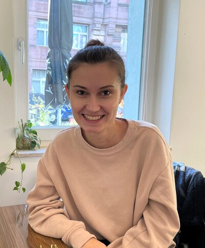
(4_4) Linn_Yiqi (China)
Swedish University of Agricultural Sciences - Sweden
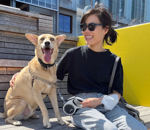
(5_5) Olivia Anderson (USA)
Swedish University for Agricultural Sciences - Sweden
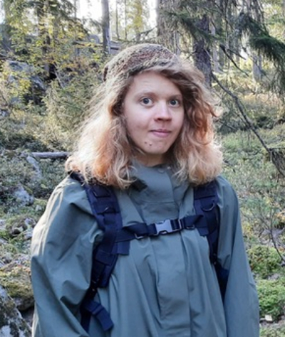
(6_6) Charlotte Weinstein (USA)
Chesapeake Conservancy - USA
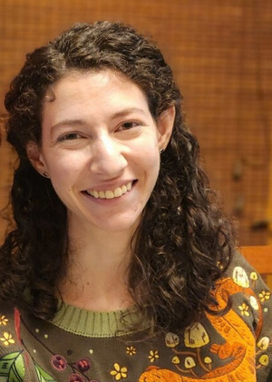
(7_7) Fernanda Desimon (Brasil)
Forest Engineer & Software Engineer Student - Brasil
Researcher at Palmtech, a startup affiliated
to Universidade Estadual do Maranhão (UEMA)
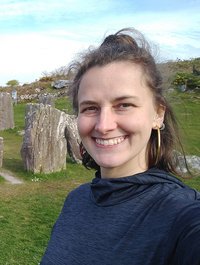
(8_9) Oliver-Valentin Dinter (Romania)
Alexandru Ioan Cuza University of Iasi - Romania University of Tours - France
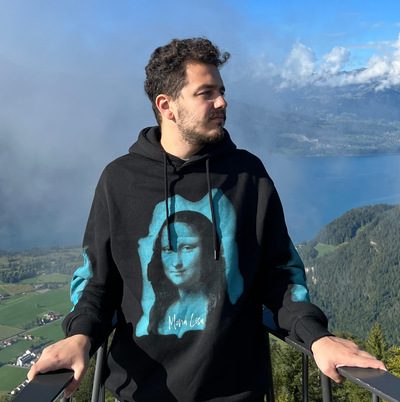
(9_10) Samuel Tsao (Taiwan)
School of the Environment, Yale University - USA
(10_11) Juana Mercedes Perlaza Rodriguez (Ecuador)
University of Basilicata (DiCEM) - School of Architecture, Italy
(11_13) Jan-Markus Homberger (Germany)
Wageningen University and Research - Netherlands.
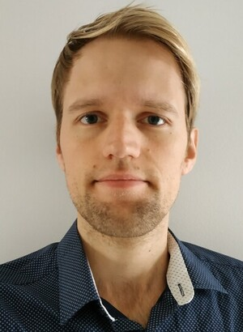
(12_16) Cassandra Follett (Cassie) (USA)
DePaul University, University of Illinois-Chicago - USA
(13_17) Alexander Mkrtchian (Alex) (Ukraine)
Leibniz Institute of Agricultural Development in Transition Economies (Germany)
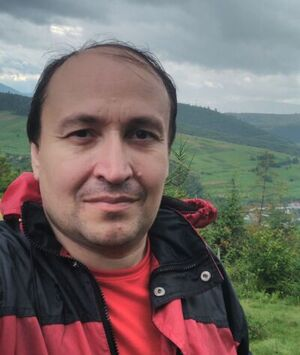
(14_15) Taiwo Adekunle Adenike (Nigeria)
Lecturer / PhD candidate
Human Resources Development and Lifelong Learning
Computer Science Department
Osun State University
(15_18) Hannah Weiser (Germany)
Heidelberg University - Germany
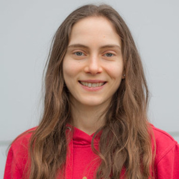
(16_20) Roisin Stanbrook (USA)
Dung Beetle Conservation And Ecology - USA
https://roisinstanbrook.com/
(17_21) Olaitan Omitola (Nigeria)
Federal University of Agriculture, Abeokuta - Nigeria
Research assistant / Parasitologist and epidemiologist
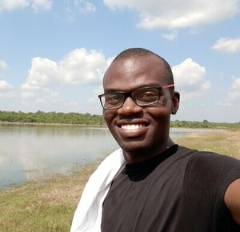
(18_22) Omolola Olojede (Lola) (Nigeria)
Public health official, Intervention coordinator
Federal Ministry of Health - Nigeria
Coordination of public health interventions in the country
(19_25) Abimbola Modupe Adedeji (Bimbo) (Nigeria)
Statistician/ Public Health Professional Nigerian Institute of Medical Research, Lagos - Nigeria.
(20_28) Adigun Abbas (Nigeria)
Statistician / Epidemiologist / Public health professional
National Centre for Remote Sensing, Jos, Nigeria
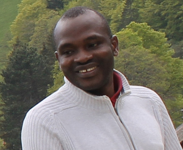
(21_26) Judith Idemili Chidumebi (Judith) (Nigeria)
Epidemiologist / Public health professional
eHealth For Everyone
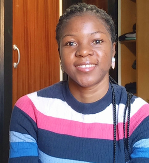
(22_27) Eric Carvalho (Brasil)
RADAMBRASIL Herbarium - Brasil
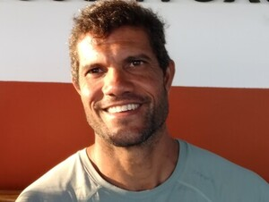
(23_29) Nils Ratnaweera (Sri Lanka)
Zurich Universtiy of Applied Sciences - Switzerland
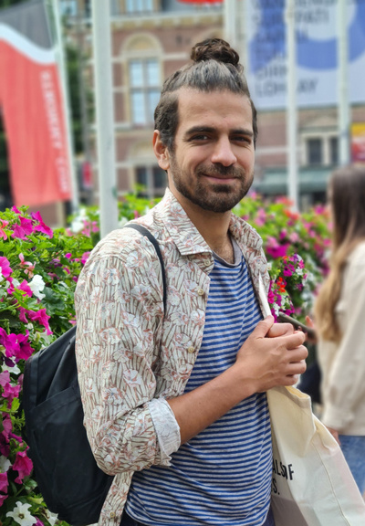
(24_30) Fengchao Sun (China)
School of the Environment, Yale University - USA
(25_31) Olha Kachalova (Ukraine)
The Silva Tarouca Research Institute for Landscape and Ornamental Gardening - Czech Republic
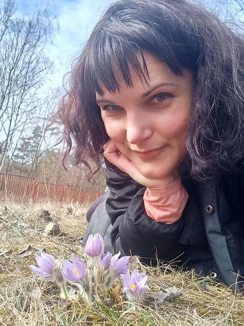
(26_32) Laurent Bataille (Belgium)
Wageningen University and Research - Netherlands
(27_34) Valdrich Fernandes (India)
Wageningen University and Research - Netherlands
(28_35) Ayodele Samuel Babalola (Nigeria)
Malarial Research Unit
Department of pure and applied zoology
Federal University of Agriculture, Abeokuta, Nigeria
Nigerian Institute of Medical Research (NIMR),
Molecular and medical entomology laboratory,
Parasitologist and epidemiologist
(29_37) Milutin Milenkovic (Serbia)
International Institute for Applied Systems Analysis (IIASA) - Austria
Advancing Systems Analysis (ASA) Program,
Novel Data Ecosystems for Sustainability (NoDES) Research Group
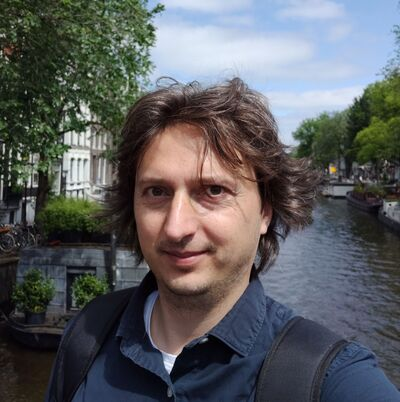
(30_38) Martin Hofer (Austria)
International Institute for Applied Systems Analysis (IIASA) - Austria
Advancing Systems Analysis (ASA) Program,
Novel Data Ecosystems for Sustainability (NoDES) Research Group